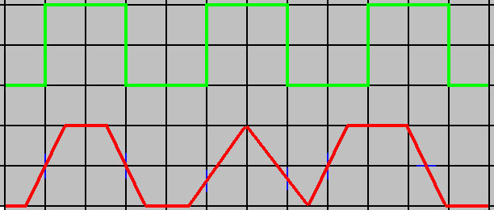

Previous
Next
TOC
Klangverschlechterung durch Jitter
Bei der Übertragung digitaler Audio-Signale droht Klangverschlech-
terung durch Jitter. Der englische Begriff bedeutet so etwas wie
Tatterich. Wann hört man ihn, wie tritt er auf, und wie bekämpft
man ihn?
Jitter ist eine Begleiterscheinung der modernen Digitaltechnik. Wenn
etwa Audio-Signale von einem CD-Laufwerk optisch oder koaxial an
einen externen Digital-Analog-Wandler oder an einen digitalen Rekor-
der übergeben werden, wandert ein Datenstrom aus Nullen und Einsen
durch die Leitung - scheinbar eine verlustfreie Form der Datenüber-
tragung. Die Tücke liegt jedoch im Detail. Die obere Abbildung zeigt
ein perfektes Digitalsignal mit dem Wert 101010. Es hat steile, sau-
bere Flanken und einen einheitlichen Zeittakt. Die untere Abbildung
zeigt dasselbe Signal mit Jitter: Die Einsen sind nicht mehr recht-
eckig, sondern verschliffen, auch ist der Zeittakt aus den Fugen ge-
raten. Das Signal ist also gestört, obwohl sein numerischer Wert
nach wie vor 101010 beträgt. Solche Zeitbasis-Fehler bezeichnet man
als Jitter. Hervorgerufen wird dieser Tatterich hauptsächlich durch
Wandler und Übertragungsmedien. Optokabel versenden Digitalsignale
in Gestalt kurzer Lichtblitze, die auf der Empfängerseite von Foto-
dioden ausgewertet werden. Beim Signalwechsel können sich daher
Zeitfehler einschleichen. Auch legen diejenigen Lichtstrahlen, die
an den Rändern der Kunststoffleiter reflektiert werden, längere Wege
zurück. Etwas neutraler verhalten sich Kupfer-Koaxialkabel. Auch
hier ist jedoch mit Jitter zu rechnen, wenn das Kabel eine falsche
Impedanz aufweist und damit Signalreflexionen hervorruft. Die akus-
tischen Konsequenzen des digitalen Zitterns vernimmt das geschulte
Ohr als harschen und aggressiven Klang, dem die Tiefenstaffelung
fehlt. Jedoch stört Jitter nur die Wiedergabe, nicht aber das digi-
tale Kopieren! Wenn man eine Aufnahme vom DAT-Rekorder auf CD
brennt, bleiben Zeitbasis-Fehler irrelevant, solange der CD-Rekorder
in der Lage ist, das Eingangssignal zu synchronisieren, also die ein-
treffenden Einsen und Nullen ordentlich zu unterscheiden und zu
schreiben. Das hat kuriose Konsequenzen. So kann zum Beispiel eine
CD, die von einem DAT-Band hergestellt wurde, besser klingen als das
Original - wenn nämlich der Digital-Analog-Wandler des DAT-Geräts
mehr Jitter aufweist als der des CD-Spielers. Gegen den Jitter ist
nur teures Kraut gewachsen. Aufwendige Spezialkabel stellen sicher,
daß digitale Signale sauber und ohne Zeitbasis-Fehler am Eingangs-
wandler ankommen. Denselben Zweck erfüllen sogenannte Jitter-Filter
in Zusammenarbeit mit einem hochwertigen externen Wandler.

Ein ideales Digitalsignal und seine Verformung durch Jitter (unten).
Kapitel Klangverschlechterung durch Jitter, Seite 1